ဟိုတယ်နှင့်ခရီးသွားလာရေးဝန်ကြီးဌာန (MOCHT)
အမျိုးသား ဒစ်ဂျစ်တယ် စာကြည့်တိုက် စီမံခန့်ခွဲမှုစနစ် (LMS)
အသုံးပြုသူ လေ့ကျင့်ရေးနှင့် စနစ်အသုံးပြုနည်း ပြည့်စုံသော လမ်းညွှန်စာအုပ်
National Library Management System — Comprehensive User & Admin Training Manual
📌 စနစ်ဆိုင်ရာ အချက်အလက်များနှင့် မိတ်ဆက် (System Overview)
- စနစ်အမည် (System Name): ဟိုတယ်နှင့်ခရီးသွားလာရေးဝန်ကြီးဌာန၊ အမျိုးသား ဒစ်ဂျစ်တယ် စာကြည့်တိုက် စီမံခန့်ခွဲမှုစနစ် (MOCHT National Digital Library Access & Management System)
- တရားဝင် လွှင့်တင်ထားသော လိပ်စာ (Live URL): http://206.189.47.42:3000 (သို့မဟုတ် Nginx Gateway: http://206.189.47.42:8080)
- အသုံးပြုထားသော နည်းပညာများ (Tech Stack): Next.js 16 (App Router), TypeScript, Tailwind CSS, Prisma ORM, SQLite DB, Canvas 2D Barcode Engine, UTF-8 BOM CSV Export Engine
- ရည်ရွယ်ချက် (Objective): အပြည်ပြည်ဆိုင်ရာ စာကြည့်တိုက် စံနှုန်းများနှင့်အညီ ပြည်သူလူထု (စာဖတ်သူအသင်းဝင်များ) နှင့် စာကြည့်တိုက်ဝန်ထမ်းများ (စာကြည့်တိုက်မှူးများ) အကြား ချောမွေ့စွာ ချိတ်ဆက်ဆောင်ရွက်နိုင်စေရန်၊ အွန်လိုင်းမှ စာအုပ်များ ရှာဖွေဖတ်ရှုနိုင်ရန် (OPAC & E-Book Viewer)၊ စာအုပ်ငှားရမ်း/အပ်နှံမှုနှင့် ဘားကုဒ်စနစ်များ ထိန်းချုပ်ရန်၊ စာအုပ်တစ်အုပ်ချင်းအလိုက် သီးခြား ဒဏ်ကြေးငွေ (MMK) တွက်ချက်ရန်၊ VIP အသင်းဝင် အထူးအခွင့်အရေးများနှင့် တရားဝင် အသင်းဝင်ကတ်ပြား (Member ID Pass) ထုတ်ယူနိုင်ရန် ပြည့်စုံစွာ ဖန်တီးထားသော စနစ်ဖြစ်ပါသည်။
📑 မာတိကာ (Table of Contents)
- အပိုင်း (၁) - အများပြည်သူနှင့် စာဖတ်သူ အသင်းဝင်များဆိုင်ရာ စနစ် (Public Patron Portal)
- လုပ်ဆောင်ချက် ၁ - အများပြည်သူသုံး စာအုပ်ရှာဖွေရေးစနစ် (OPAC Search & Category Filters)
- လုပ်ဆောင်ချက် ၂ - ဝဘ်ဘရောင်ဇာအတွင်း တိုက်ရိုက်ဖတ်ရှုနိုင်သော E-Book PDF ဖတ်စနစ် (In-Browser E-Book PDF Viewer)
- လုပ်ဆောင်ချက် ၃ - စနစ်သို့ အကောင့်ဝင်ရောက်ခြင်း (Member & Staff Authentication)
- လုပ်ဆောင်ချက် ၄ - စာဖတ်သူ အသင်းဝင် ပေါ်တယ်နှင့် သက်တမ်းတိုးခြင်း (Patron Portal & Self-Renewal)
- အပိုင်း (၂) - စာကြည့်တိုက်မှူးနှင့် ဝန်ထမ်းများဆိုင်ရာ စီမံခန့်ခွဲမှုစနစ် (Staff Control Panel)
- လုပ်ဆောင်ချက် ၅ - စာကြည့်တိုက် ကွပ်ကဲမှု ဒက်ရှ်ဘုတ် (Staff Admin Command Center)
- လုပ်ဆောင်ချက် ၆ - စာအုပ်စာရင်းနှင့် ကတ်တလောက် စီမံခန့်ခွဲမှု (Catalog Management & Inventory)
- လုပ်ဆောင်ချက် ၇ - စာအုပ်အသစ်ထည့်သွင်းခြင်းနှင့် ဒဏ်ကြေးနှုန်း သတ်မှတ်ခြင်း (Add Book & Daily Fine Rate)
- လုပ်ဆောင်ချက် ၈ - စာအုပ်ကဏ္ဍခွဲများ စီမံခန့်ခွဲမှု (Book Category CRUD Management)
- လုပ်ဆောင်ချက် ၉ - စာအုပ်ငှားရမ်း/အပ်နှံ ကောင်တာနှင့် VIP အခွင့်အရေး (Circulation Desk & VIP +7 Days Rule)
- လုပ်ဆောင်ချက် ၁၀ - ဦးစားပေး ကြိုတင်မှာယူမှု စီမံခန့်ခွဲခြင်း (Priority Holds Queue Management)
- လုပ်ဆောင်ချက် ၁၁ - အသင်းဝင်များ စာရင်းနှင့် မှတ်ပုံတင်စိစစ်ခြင်း (Patron Directory & Myanmar NRC KYC)
- လုပ်ဆောင်ချက် ၁၂ - တရားဝင် VIP အသင်းဝင်ကတ်ပြားနှင့် ပုံထုတ်ယူခြင်း (VIP Member Card Generation & PNG Export)
- လုပ်ဆောင်ချက် ၁၃ - ဒဏ်ကြေးစာရင်းနှင့် ငွေပေးချေမှု ကောက်ခံခြင်း (Fines Ledger & Payment Collection)
- အပိုင်း (၃) - အဆင့်မြင့် အစီရင်ခံစာနှင့် စာရင်းဇယား စနစ် (Reporting & Analytics Suite)
- လုပ်ဆောင်ချက် ၁၄ - စွမ်းဆောင်ရည် အနှစ်ချုပ်နှင့် Date Filter (Executive Summary & Date Filter)
- လုပ်ဆောင်ချက် ၁၅ - ငှားရမ်းမှုမှတ်တမ်းနှင့် CSV ဒေါင်းလုဒ် (Circulation Loans Ledger & CSV Export)
- လုပ်ဆောင်ချက် ၁၆ - ဒဏ်ကြေးငွေစာရင်းနှင့် CSV ဒေါင်းလုဒ် (Fines & Financial Ledger & CSV Export)
- လုပ်ဆောင်ချက် ၁၇ - စာအုပ်လက်ကျန်စာရင်းနှင့် CSV ဒေါင်းလုဒ် (Catalog Inventory Status & CSV Export)
- လုပ်ဆောင်ချက် ၁၈ - အသင်းဝင်များနှင့် VIP စာရင်း CSV ဒေါင်းလုဒ် (Patron & VIP Directory & CSV Export)
- လုပ်ဆောင်ချက် ၁၉ - ရက်ကျော်လွန်စာအုပ်များ စာရင်းနှင့် CSV ဒေါင်းလုဒ် (Overdue Action List & CSV Export)
- အပိုင်း (၄) - အဆင့်မြင့် စာကြည့်တိုက် လုပ်ငန်းဆောင်ရွက်ချက်များ (Enterprise Library Services)
- လုပ်ဆောင်ချက် ၂၀ - စာအုပ်ဝယ်ယူမှု စီမံခန့်ခွဲခြင်း (Acquisitions & Purchase Orders)
- လုပ်ဆောင်ချက် ၂၁ - ဂျာနယ်နှင့် မဂ္ဂဇင်း စာရင်းသွင်းမှု (Serials & Periodicals)
- လုပ်ဆောင်ချက် ၂၂ - စာကြည့်တိုက်အချင်းချင်း ချိတ်ဆက်ငှားရမ်းခြင်း (Interlibrary Loan - ILL)
- လုပ်ဆောင်ချက် ၂၃ - တက္ကသိုလ် သင်ရိုးညွှန်းတမ်း စာအုပ်များ (Course Reserves)
- အပိုင်း (၅) - စံသတ်မှတ် လုပ်ငန်းလမ်းညွှန် (SOP) နှင့် အမေးများသော မေးခွန်းများ (FAQ)
အပိုင်း (၁) - အများပြည်သူနှင့် စာဖတ်သူ အသင်းဝင်များဆိုင်ရာ စနစ် (Public Patron Portal)
လုပ်ဆောင်ချက် ၁ - အများပြည်သူသုံး စာအုပ်ရှာဖွေရေးစနစ် (OPAC Search & Category Filters)
ရည်ရွယ်ချက်: ပြည်သူလူထုနှင့် စာကြည့်တိုက် အသင်းဝင်များအနေဖြင့် စာကြည့်တိုက်တွင် ရှိသော မြန်မာဂန္ထဝင်စာပေများ၊ သမိုင်းစာအုပ်များ၊ နည်းပညာနှင့် ရသစာပေများကို လျင်မြန်လွယ်ကူစွာ ရှာဖွေနိုင်စေရန် ဖြစ်ပါသည်။
အဓိက အချက်များ-
- လျင်မြန်သော ရှာဖွေမှုစနစ် (Live Search): စာအုပ်ခေါင်းစဉ်၊ စာရေးဆရာအမည်၊ ထုတ်ဝေသူ သို့မဟုတ် ISBN နံပါတ် ရိုက်ထည့်သည်နှင့် ချက်ချင်း ရှာဖွေဖော်ပြပေးပါသည်။
- စာအုပ်ကဏ္ဍခွဲ ပိုင်းခြားမှု (Category Pills):
လူကြိုက်များ/ရေပန်းစား (Trending)၊အသစ်ထွက်ရှိမှုများ (Latest release)၊မြန်မာဂန္ထဝင်စာပေ၊နည်းပညာနှင့် ITစသည့် ကဏ္ဍခွဲ ခလုတ်များဖြင့် တစ်ချက်နှိပ်ရုံဖြင့် စစ်ထုတ်ကြည့်ရှုနိုင်ပါသည်။ - စာအုပ်လက်ကျန် အခြေအနေ ပြသမှု (Availability Status): စင်ပေါ်တွင် ငှားရမ်းနိုင်သော စာအုပ်မိတ္တူ အရေအတွက် (Available) သို့မဟုတ် ငှားရမ်းထားဆဲ (Checked Out) အခြေအနေကို အစိမ်း/အပြာရောင် Badge ဖြင့် တိကျစွာ ပြသပေးပါသည်။
- အမျိုးသားစာကြည့်တိုက် E-Book အရင်းအမြစ် ခလုတ်: အမျိုးသားစာကြည့်တိုက်၏ ဒစ်ဂျစ်တယ် အရင်းအမြစ်များဆီသို့ တိုက်ရိုက်သွားရောက်နိုင်သော လင့်ခ်ခလုတ် ပါဝင်ပါသည်။
အသုံးပြုနည်း အဆင့်ဆင့်-
- ပင်မစာမျက်နှာ http://206.189.47.42:3000/ သို့ ဝင်ရောက်ပါ။
- ရှာဖွေရေးဘားတွင် မိမိရှာဖွေလိုသော စာအုပ်အမည် သို့မဟုတ် စာရေးဆရာ (ဥပမာ- "ဆရာကြီး ရွှေဥဒေါင်း" သို့မဟုတ် "ချစ်ဦးညို") ကို ရိုက်ထည့်ပါ။
- မိမိစိတ်ဝင်စားရာ ကဏ္ဍခွဲခလုတ် (ဥပမာ- "🔥 လူကြိုက်များ/ရေပန်းစား") ကို နှိပ်၍ သီးသန့်ရွေးထုတ်ပါ။
- စာအုပ်ကတ်ပြားပေါ်ရှိ အသေးစိတ် အချက်အလက်များ၊ ISBN နှင့် လက်ကျန်မိတ္တူ အရေအတွက်ကို ကြည့်ရှုပါ။
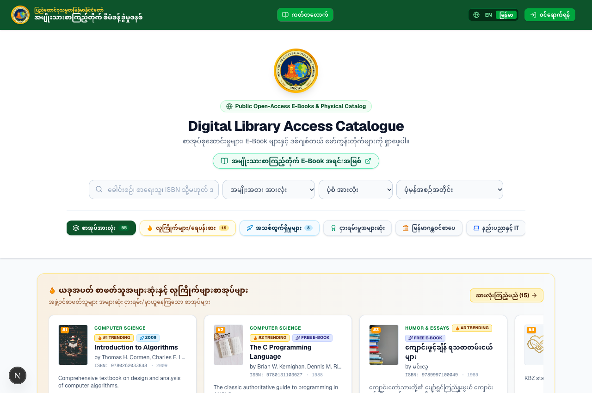
လုပ်ဆောင်ချက် ၂ - ဝဘ်ဘရောင်ဇာအတွင်း တိုက်ရိုက်ဖတ်ရှုနိုင်သော E-Book PDF ဖတ်စနစ် (In-Browser E-Book PDF Viewer)
ရည်ရွယ်ချက်: ပြင်ပဆော့ဖ်ဝဲလ်များ သီးခြားဒေါင်းလုဒ်ဆွဲစရာမလိုဘဲ ကွန်ပျူတာ သို့မဟုတ် ဖုန်းဘရောင်ဇာပေါ်တွင် တိုက်ရိုက် E-Book PDF များကို ဖတ်ရှုနိုင်စေရန် ဖြစ်ပါသည်။
အဓိက အချက်များ-
- ကလစ်တစ်ချက်ဖြင့် ဖတ်ရှုနိုင်မှု (Instant Reading): E-Book ရရှိနိုင်သော စာအုပ်များတွင် စိမ်းပြာရောင် "PDF ဖတ်ရန်" ခလုတ် ပေါ်နေမည် ဖြစ်ပါသည်။
- ပြည့်စုံသော Reader Controls: စာမျက်နှာ အကူးအပြောင်း၊ Zoom In / Zoom Out ချဲ့ခြင်း/ချုံ့ခြင်း၊ မျက်နှာပြင်ပြည့် (Fit Width) ကြည့်ရှုခြင်းနှင့် ဒေါင်းလုဒ်ရယူခြင်းများကို စုံလင်စွာ ဆောင်ရွက်နိုင်ပါသည်။
- တရားဝင် E-Book စာအုပ် ၅၀ ကျော်: ခေတ်ပေါ်နည်းပညာမှသည် မြန်မာ့သမိုင်းနှင့် ရသစာပေအထိ စာအုပ်ပေါင်း ၅၀ ကျော်ကို အပြည့်အစုံ ထည့်သွင်းပေးထားပါသည်။
အသုံးပြုနည်း အဆင့်ဆင့်-
- စာအုပ်စာရင်းတွင်
FREE E-BOOKအမှတ်အသားပါသော စာအုပ်ကို ရှာပါ။ - စိမ်းပြာရောင် "PDF ဖတ်ရန်" ခလုတ်ကို နှိပ်ပါ။
- မျက်နှာပြင်ပေါ်တွင် ပွင့်လာသော Reader Modal ဖြင့် စာအုပ်ကို စတင်ဖတ်ရှုပါ။
- စာဖတ်ပြီးပါက ညာဘက်အပေါ်ထောင့်ရှိ "✕" (Close) ခလုတ်ကို နှိပ်၍ ပိတ်နိုင်ပါသည်။
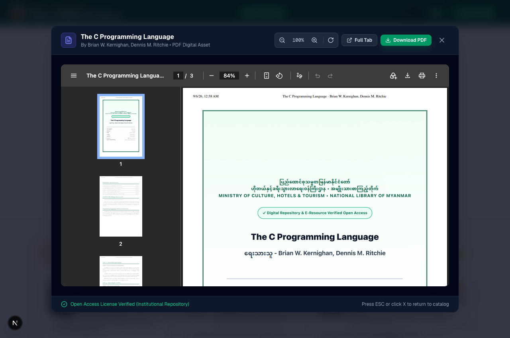
လုပ်ဆောင်ချက် ၃ - စနစ်သို့ အကောင့်ဝင်ရောက်ခြင်း (Member & Staff Authentication)
ရည်ရွယ်ချက်: စာကြည့်တိုက် အသင်းဝင်များနှင့် ဝန်ထမ်းများ မိမိတို့၏ သက်ဆိုင်ရာ အခန်းကဏ္ဍ (Role) အလိုက် လုံခြုံစွာ အကောင့်ဝင်ရောက်နိုင်စေရန် ဖြစ်ပါသည်။
အဓိက အချက်များ-
- အခန်းကဏ္ဍခွဲခြားမှု (Role-Based Access):
Patron (စာဖတ်သူအသင်းဝင်)နှင့်Staff/Officer (စာကြည့်တိုက်မှူးနှင့် ဝန်ထမ်း)ဟူ၍ နှစ်မျိုး ခွဲခြားထားပါသည်။ - လွယ်ကူသော Demo Login ခလုတ်များ: စမ်းသပ်လေ့ကျင့်သူများ အဆင်ပြေစေရန် စာကြည့်တိုက်မှူးအကောင့် နှင့် အသင်းဝင်အကောင့်များအတွက် Quick Preset ခလုတ်များ ထည့်သွင်းထားပါသည်။
- ဘားကုဒ် သို့မဟုတ် အီးမေးလ်ဖြင့် ဝင်ရောက်နိုင်မှု: မိမိ၏ အီးမေးလ် သို့မဟုတ် ကတ်ပြားပေါ်ရှိ ဘားကုဒ်နံပါတ် (ဥပမာ-
PAT-90022) ဖြင့် အလွယ်တကူ Login ဝင်နိုင်ပါသည်။
အသုံးပြုနည်း အဆင့်ဆင့်-
- အပေါ် Navigation Bar ရှိ "အကောင့်ဝင်ရန် (Login)" ကို နှိပ်ပါ။
- မိမိဝင်ရောက်လိုသည့် အကောင့်အမျိုးအစား (Patron သို့မဟုတ် Staff) ကို ရွေးချယ်ပါ။
- အီးမေးလ်နှင့် စကားဝှက် ရိုက်ထည့်ပြီး "Sign In" နှိပ်ပါ။
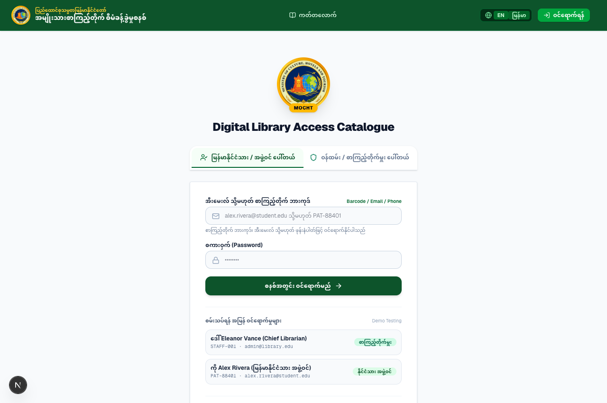
လုပ်ဆောင်ချက် ၄ - စာဖတ်သူ အသင်းဝင် ပေါ်တယ်နှင့် သက်တမ်းတိုးခြင်း (Patron Portal & Self-Renewal)
ရည်ရွယ်ချက်: စာဖတ်သူများ မိမိငှားရမ်းထားသော စာအုပ်စာရင်းများ၊ ပြန်အပ်ရမည့် ရက်စွဲများကို အချိန်နှင့်တစ်ပြေးညီ စစ်ဆေးနိုင်ပြီး အွန်လိုင်းမှတစ်ဆင့် စာအုပ်သက်တမ်းတိုးနိုင်စေရန် ဖြစ်ပါသည်။
အဓိက အချက်များ-
- လက်ရှိငှားရမ်းထားမှု အနှစ်ချုပ် (Current Checkouts): ငှားရမ်းထားသည့် စာအုပ်အမည်၊ ငှားသည့်ရက်၊ ပြန်အပ်ရမည့်ရက်နှင့် ရက်လွန်ရန် ကျန်ရှိသည့် ရက်အရေအတွက်ကို ဖော်ပြပေးပါသည်။
- အွန်လိုင်းမှ စာအုပ်သက်တမ်းတိုးခြင်း (One-Click Self-Renewal): စာကြည့်တိုက်သို့ လူကိုယ်တိုင် လာရောက်စရာမလိုဘဲ စာအုပ်ဘေးရှိ "သက်တမ်းတိုးရန် (Renew Loan)" ခလုတ်ကို နှိပ်၍ သတ်မှတ်ရက်အတိုင်း သက်တမ်းတိုးနိုင်ပါသည်။
- ကြိုတင်မှာယူမှု အခြေအနေ (Hold Tracking): မိမိ ကြိုတင်မှာယူထားသော စာအုပ်များ၏ Queue အဆင့်နှင့် စာကြည့်တိုက်တွင် လာရောက်ထုတ်ယူနိုင်သည့် အခြေအနေကို စစ်ဆေးနိုင်ပါသည်။
အသုံးပြုနည်း အဆင့်ဆင့်-
- အသင်းဝင်အကောင့်ဖြင့် Login ဝင်ပြီးနောက် "အသင်းဝင် ပေါ်တယ် (Member Portal)" သို့ သွားပါ။
- "လက်ရှိငှားရမ်းထားသော စာအုပ်များ" စာရင်းတွင် ပြန်အပ်ရမည့်ရက်ကို ကြည့်ရှုပါ။
- သက်တမ်းတိုးလိုပါက စိမ်းပြာရောင် "သက်တမ်းတိုးရန်" ခလုတ်ကို နှိပ်ပါ။
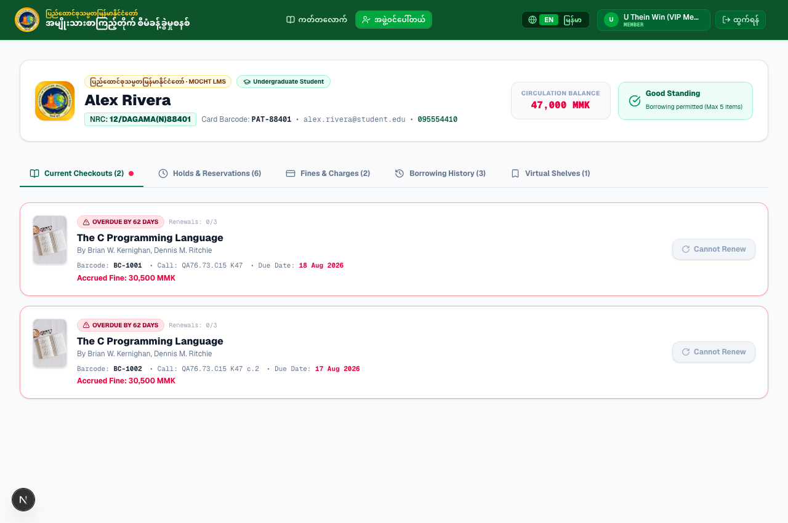
အပိုင်း (၂) - စာကြည့်တိုက်မှူးနှင့် ဝန်ထမ်းများဆိုင်ရာ စီမံခန့်ခွဲမှုစနစ် (Staff Control Panel)
လုပ်ဆောင်ချက် ၅ - စာကြည့်တိုက် ကွပ်ကဲမှု ဒက်ရှ်ဘုတ် (Staff Admin Command Center)
ရည်ရွယ်ချက်: စာကြည့်တိုက်မှူးများအတွက် စာကြည့်တိုက်တစ်ခုလုံး၏ လည်ပတ်မှုအခြေအနေ (စုစုပေါင်းစာအုပ်၊ ငှားရမ်းဆဲစာအုပ်၊ အသင်းဝင်ဦးရေ၊ ရရန်ကျန်ဒဏ်ကြေး) ကို မျက်ခြည်မပြတ် စောင့်ကြည့်ထိန်းချုပ်နိုင်စေရန် ဖြစ်ပါသည်။
အဓိက အချက်များ-
- အချိန်နှင့်တစ်ပြေးညီ KPI ကတ်ပြားများ: စုစုပေါင်း စာအုပ်ခေါင်းစဉ်၊ လက်ရှိငှားထားသော စာအုပ်များ၊ မှတ်ပုံတင်ထားသော အသင်းဝင်ဦးရေနှင့် ကြိုတင်မှာယူမှု စာရင်းများ။
- အမြန်လုပ်ငန်းခလုတ်များ (Quick Shortcuts): စာအုပ်ကတ်တလောက်သွင်းခြင်း၊ ငှား/ပြန်ကောင်တာ၊ အသင်းဝင်စာရင်း၊ ဒဏ်ကြေးစာရင်းနှင့် အစီရင်ခံစာများဆီသို့ တိုက်ရိုက်သွားရောက်နိုင်သော ခလုတ်များ။
- လတ်တလော လှုပ်ရှားမှု မှတ်တမ်း (Recent Activity Feed): ယနေ့ စာအုပ်ငှားရမ်းမှု၊ ပြန်အပ်မှုနှင့် ဒဏ်ကြေးပေးသွင်းမှုများကို အချိန်မှတ်တမ်းနှင့်တကွ ပြသပေးပါသည်။
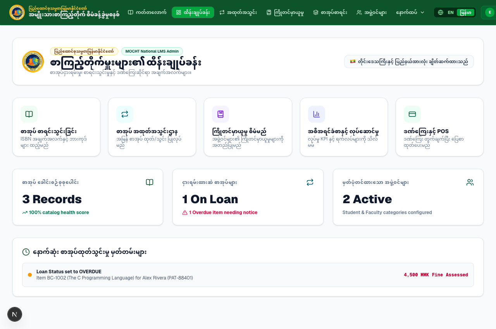
လုပ်ဆောင်ချက် ၆ - စာအုပ်စာရင်းနှင့် ကတ်တလောက် စီမံခန့်ခွဲမှု (Catalog Management & Inventory)
ရည်ရွယ်ချက်: စာကြည့်တိုက်ရှိ စာအုပ်အသစ်များ ထည့်သွင်းခြင်း၊ ပြင်ဆင်ခြင်း၊ စာအုပ်မိတ္တူ (Physical Copies) များနှင့် စင်နံပါတ် (Shelf Location) များကို စနစ်တကျ စီမံခန့်ခွဲနိုင်စေရန် ဖြစ်ပါသည်။
အဓိက အချက်များ-
- ပြည့်စုံသော စာအုပ်ဇယား (Bibliographic Table): စာအုပ်မျက်နှာဖုံး၊ ခေါင်းစဉ်၊ စာရေးဆရာ၊ ISBN၊ အမျိုးအစား၊ ကဏ္ဍခွဲ၊ မိတ္တူအရေအတွက်နှင့် ငှားရမ်းမှုကာလများကို တစ်နေရာတည်းတွင် ကြည့်ရှုနိုင်ပါသည်။
- စာအုပ်ကဏ္ဍ Filter များ (Category Tabs): စာအုပ်များကို Trending၊ Latest Release စသည့် သတ်မှတ်ကဏ္ဍများအလိုက် စစ်ထုတ်ကြည့်ရှုနိုင်ပါသည်။
- မိတ္တူစီမံခန့်ခွဲမှု (Manage Copies): စာအုပ်တစ်အုပ်ချင်းစီအတွက် ဘားကုဒ်နံပါတ်၊ ထားရှိရာ စင်နေရာ (ဥပမာ- Shelf B-12) နှင့် စာအုပ်အခြေအနေ (Available, On Loan, Maintenance, Lost) တို့ကို သီးခြားစီမံနိုင်ပါသည်။
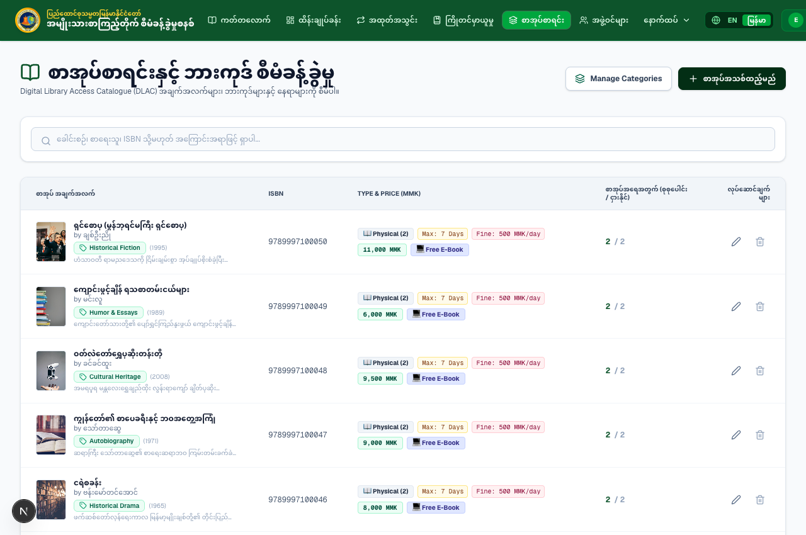
လုပ်ဆောင်ချက် ၇ - စာအုပ်အသစ်ထည့်သွင်းခြင်းနှင့် ဒဏ်ကြေးနှုန်း သတ်မှတ်ခြင်း (Add Book & Daily Fine Rate)
ရည်ရွယ်ချက်: စာအုပ်အသစ်တစ်အုပ် စနစ်ထဲသို့ ထည့်သွင်းရာတွင် သက်ဆိုင်ရာ ကဏ္ဍခွဲ (Category)၊ အများဆုံးငှားရမ်းနိုင်သော ရက်အရေအတွက်နှင့် ရက်လွန်ဒဏ်ကြေးနှုန်း (MMK/Day) တို့ကို စိတ်ကြိုက် သတ်မှတ်နိုင်စေရန် ဖြစ်ပါသည်။
အဓိက အချက်များ-
- စာအုပ်ကဏ္ဍခွဲ ရွေးချယ်မှု (Book Category Selection): စာအုပ်ထည့်သွင်းချိန်တွင် သက်ဆိုင်ရာ Category (ဥပမာ- Trending, Latest release, Computer Science) ကို Dropdown မှ အလွယ်တကူ ရွေးချယ်နိုင်ပါသည်။
- အများဆုံးငှားရမ်းခွင့် ကာလ (Max Rent Days): စံသတ်မှတ်ချက် ၇ ရက်အပြင် စာအုပ်အမျိုးအစားအလိုက် ၁၄ ရက်၊ ၂၁ ရက် စသဖြင့် ပြင်ဆင်သတ်မှတ်နိုင်ပါသည်။
- စာအုပ်အလိုက် သီးခြား ဒဏ်ကြေးနှုန်း (Daily Overdue Fine Rate in MMK): တစ်ရက်လျှင် ကျသင့်မည့် ဒဏ်ကြေးငွေ (ဥပမာ- ၅၀၀ ကျပ်၊ ၁,၀၀၀ ကျပ်) ကို စာအုပ်တန်ဖိုးအလိုက် စိတ်ကြိုက်သတ်မှတ်နိုင်ပါသည်။
အသုံးပြုနည်း အဆင့်ဆင့်-
- စာအုပ်စာရင်း စာမျက်နှာတွင် အစိမ်းရောင် "+ စာအုပ်အသစ်ထည့်ရန်" ခလုတ်ကို နှိပ်ပါ။
- စာအုပ်ခေါင်းစဉ်၊ စာရေးဆရာ၊ ISBN၊ ထုတ်ဝေသူနှင့် အမျိုးအစားများကို ဖြည့်သွင်းပါ။
- Book Category Dropdown တွင် သင့်လျော်သော ကဏ္ဍခွဲကို ရွေးပါ။
- အများဆုံး ငှားရမ်းနိုင်သည့်ရက် (Max Rent Days) နှင့် တစ်ရက် ဒဏ်ကြေးနှုန်း (Daily Fine Rate in MMK) တို့ကို သတ်မှတ်ပါ။
- "သိမ်းဆည်းမည် (Save Book)" ကို နှိပ်ပါ။
လုပ်ဆောင်ချက် ၈ - စာအုပ်ကဏ္ဍခွဲများ စီမံခန့်ခွဲမှု (Book Category CRUD Management)
ရည်ရွယ်ချက်: စာကြည့်တိုက်မှူးများအနေဖြင့် စာအုပ်ကဏ္ဍခွဲအသစ်များ (Categories) ကို လိုအပ်သလို အသစ်ထည့်သွင်းခြင်း၊ အမည်ပြင်ဆင်ခြင်းနှင့် ဖျက်ပစ်ခြင်းများကို လွတ်လပ်စွာ ဆောင်ရွက်နိုင်စေရန် ဖြစ်ပါသည်။
အဓိက အချက်များ-
- လွတ်လပ်စွာ စီမံခန့်ခွဲနိုင်မှု (Full CRUD): Create, Read, Update, Delete လုပ်ငန်းအားလုံးကို အလွယ်တကူ ဆောင်ရွက်နိုင်ပါသည်။
- ကဏ္ဍကုဒ်နှင့် ဖော်ပြချက် (Code & Description): ကဏ္ဍအမည်အပြင် အတိုကောက်ကုဒ် (ဥပမာ-
TRENDING,LATEST,CS) များကိုပါ စနစ်တကျ ထည့်သွင်းနိုင်ပါသည်။ - အလိုအလျောက် ချိတ်ဆက်မှု (Auto Integration): ဤနေရာတွင် ထည့်သွင်းလိုက်သော Category များသည် ပင်မ OPAC ရှာဖွေရေးစာမျက်နှာနှင့် စာအုပ်ထည့်သွင်းသည့် Modal များတွင် ချက်ချင်း အလိုအလျောက် ပေါ်လာမည် ဖြစ်ပါသည်။
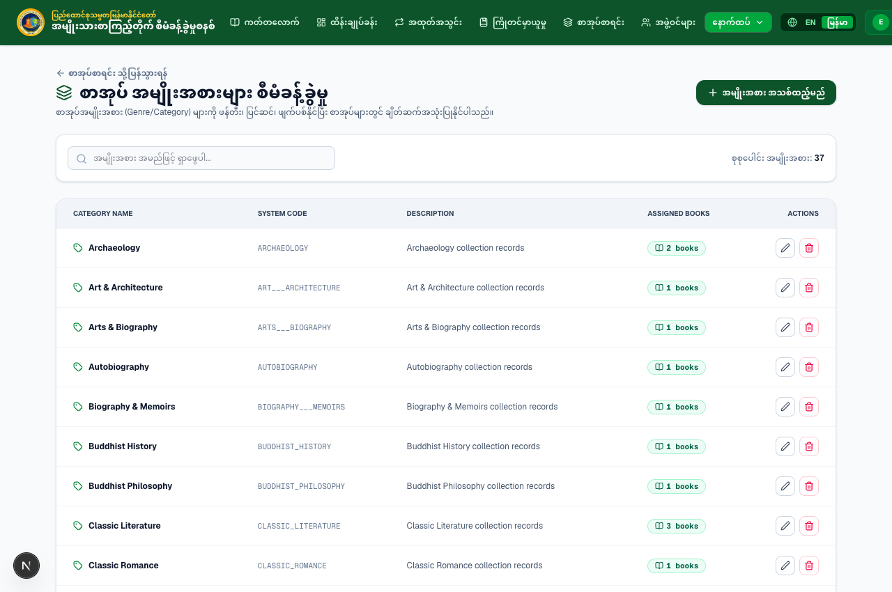
လုပ်ဆောင်ချက် ၉ - စာအုပ်ငှားရမ်း/အပ်နှံ ကောင်တာနှင့် VIP အခွင့်အရေး (Circulation Desk & VIP +7 Days Rule)
ရည်ရွယ်ချက်: စာကြည့်တိုက် ကောင်တာတွင် စာအုပ်ငှားရမ်းခြင်းနှင့် ပြန်လည်အပ်နှံခြင်းများကို ဘားကုဒ် စကင်နာဖြင့် လျင်မြန်စွာ ဆောင်ရွက်နိုင်စေရန်နှင့် VIP အသင်းဝင်များအတွက် အထူးရက်ပို ခံစားခွင့်များ အလိုအလျောက် တွက်ချက်ပေးရန် ဖြစ်ပါသည်။
အဓိက အချက်များ-
- ဘားကုဒ်စကင်ဖတ်စနစ် (Barcode Scanner Ready): အသင်းဝင်ကတ် ဘားကုဒ် (Patron Barcode) နှင့် စာအုပ်ဘားကုဒ် (Book Copy Barcode) တို့ကို စကင်ဖတ်ရုံဖြင့် စက္ကန့်ပိုင်းအတွင်း အချက်အလက်များ ကျရောက်လာပါသည်။
- VIP အသင်းဝင် အထူးရက်ပို စည်းမျဉ်း (+7 Days Loan Rule):
- စာဖတ်သူသည် VIP အသင်းဝင် ဖြစ်ပါက စာအုပ်ငှားရမ်းချိန်တွင် စံသတ်မှတ်ငှားရမ်းရက်ထက် +7 ရက် ပိုမိုခံစားခွင့် ရရှိမည် ဖြစ်ပါသည်။
- ဥပမာ - သာမန်အသင်းဝင်အတွက် ၇ ရက်ငှားရမ်းခွင့်ရှိသော စာအုပ်ကို VIP အသင်းဝင် ငှားပါက ၁၄ ရက် အလိုအလျောက် သတ်မှတ်ပေးပါသည်။
- အချိန်မှီ ဒဏ်ကြေးတွက်ချက်မှု (Real-Time Fine Calculation): စာအုပ်ပြန်အပ်ချိန်တွင် သတ်မှတ်ရက် ကျော်လွန်နေပါက ရက်ကျော်လွန်သည့် ရက်အရေအတွက်နှင့် စာအုပ်၏ တစ်ရက်ဒဏ်ကြေးနှုန်းကို မြှောက်၍ ကျသင့်ဒဏ်ကြေးငွေ (MMK) ကို အလိုအလျောက် စာရင်းသွင်းပေးပါသည်။
အသုံးပြုနည်း အဆင့်ဆင့်-
- "စာအုပ် ငှား/ပြန် ကောင်တာ (Circulation Desk)" သို့ သွားပါ။
- အသင်းဝင် ဘားကုဒ် (Patron Barcode) ရိုက်ထည့်ပါ (ဥပမာ-
PAT-VIP-001)။ အသင်းဝင်၏ VIP အဆင့်နှင့် လက်ရှိငှားထားသော စာအုပ်များကို ပြသပေးပါမည်။ - စာအုပ် မိတ္တူ ဘားကုဒ် (Copy Barcode) ရိုက်ထည့်ပါ (ဥပမာ-
BK-001-C1)။ - စနစ်မှ စာအုပ်ငှားရမ်းခွင့် ရက်စွဲ (VIP ဖြစ်ပါက +7 ရက် ပေါင်းပြီးသား Due Date) ကို အစမ်းဖော်ပြပေးမည် ဖြစ်ပါသည်။
- စိမ်းပြာရောင် "စာအုပ်ငှားရမ်းမည် (Issue Loan)" ခလုတ်ကို နှိပ်ပါ။
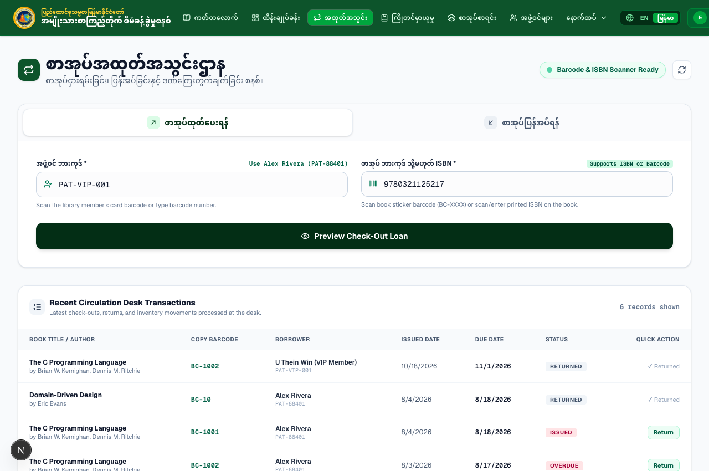
လုပ်ဆောင်ချက် ၁၀ - ဦးစားပေး ကြိုတင်မှာယူမှု စီမံခန့်ခွဲခြင်း (Priority Holds Queue Management)
ရည်ရွယ်ချက်: စာအုပ်လက်ကျန်မရှိချိန်တွင် စာဖတ်သူများ ကြိုတင်မှာယူထားသော စာရင်းများကို အပြည်ပြည်ဆိုင်ရာ စံနှုန်းအတိုင်း ဦးစားပေးအဆင့် (Queue Priority) ဖြင့် ထိန်းချုပ်စီမံနိုင်စေရန် ဖြစ်ပါသည်။
အဓိက အချက်များ-
- ဦးစားပေး တန်းစီဇယား (Priority Ranking): စောစီးစွာ မှာယူထားသူများကို ဦးစားပေးအဆင့် #1, #2 စသဖြင့် အစဉ်လိုက် သတ်မှတ်ပေးထားပါသည်။
- စာအုပ်ပြန်ရောက်ချိန် အသိပေးမှု: ငှားရမ်းထားသော စာအုပ် ပြန်လည်အပ်နှံလိုက်သည်နှင့် အဆိုပါ စာအုပ်ကို နောက်ထပ်မှာယူထားသူထံ အလိုအလျောက် သီးသန့်ဖယ်ထားပေး (Reserved) ပါသည်။
- ထုတ်ပေးခြင်းနှင့် ပယ်ဖျက်ခြင်း (Fulfill & Cancel): စာဖတ်သူ လာရောက်ထုတ်ယူပါက "ထုတ်ပေးပြီး (Fulfill)" နှိပ်နိုင်ပြီး လိုအပ်ပါက ပယ်ဖျက်နိုင်ပါသည်။
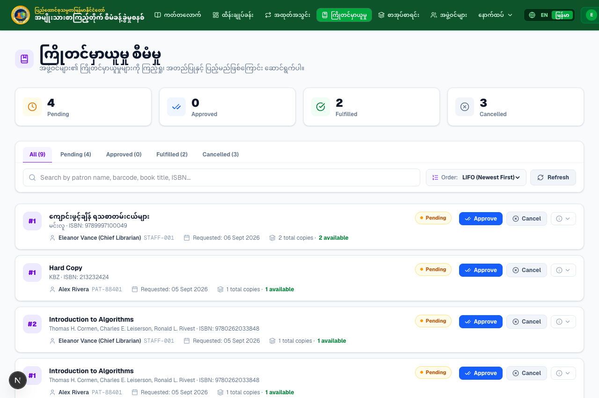
လုပ်ဆောင်ချက် ၁၁ - အသင်းဝင်များ စာရင်းနှင့် မှတ်ပုံတင်စိစစ်ခြင်း (Patron Directory & Myanmar NRC KYC)
ရည်ရွယ်ချက်: စာကြည့်တိုက် အသင်းဝင်များ၏ အချက်အလက်များ၊ ဆက်သွယ်ရန်ဖုန်း၊ နိုင်ငံသားစိစစ်ရေးကတ်ပြား (NRC) နှင့် VIP အဆင့်အတန်းများကို စိစစ်အတည်ပြု စီမံခန့်ခွဲနိုင်စေရန် ဖြစ်ပါသည်။
အဓိက အချက်များ-
- မြန်မာနိုင်ငံသား မှတ်ပုံတင် စိစစ်မှု (Myanmar NRC Format): ဥပမာ-
၁၂/လမန(နိုင်)၁၂၃၄၅၆စသည့် မြန်မာနိုင်ငံသား မှတ်ပုံတင် ပုံစံဖြင့် စနစ်တကျ မှတ်တမ်းတင် စိစစ်နိုင်ပါသည်။ - VIP အသင်းဝင် အဆင့် သတ်မှတ်ခြင်း (VIP Status Toggle): အသင်းဝင်တစ်ဦးချင်းစီကို သာမန်အသင်းဝင် (Standard) သို့မဟုတ် VIP အသင်းဝင် အဖြစ် Switch ခလုတ်လေးဖြင့် ချက်ချင်း ပြောင်းလဲသတ်မှတ်နိုင်ပါသည်။
- အကောင့်ပိတ်ပင်ခြင်း (Suspend/Block): စာအုပ်ရက်လွန် ဒဏ်ကြေးများ ပေးဆောင်ရန် ပျက်ကွက်နေသူများကို အငှားရပ်ဆိုင်းထားနိုင်ပါသည်။
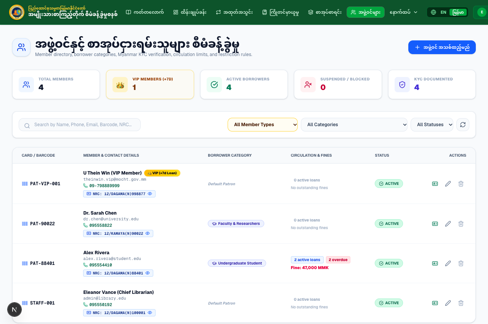
လုပ်ဆောင်ချက် ၁၂ - တရားဝင် VIP အသင်းဝင်ကတ်ပြားနှင့် ပုံထုတ်ယူခြင်း (VIP Member Card Generation & PNG Export)
ရည်ရွယ်ချက်: အသင်းဝင်များအတွက် တရားဝင် နိုင်ငံတော်အဆင့် အသင်းဝင်ကတ်ပြားကို HTML5 Canvas နည်းပညာဖြင့် ဖန်တီးပေးပြီး ပုံနှိပ်ထုတ်ဝေနိုင်ရန် အရည်အသွေးမြင့် PNG ဖိုင်အဖြစ် ဒေါင်းလုဒ်ရယူနိုင်စေရန် ဖြစ်ပါသည်။
အဓိက အချက်များ-
- နိုင်ငံတော်အဆင့် ဇိမ်ခံဒီဇိုင်း (Luxury MOCHT Official Pass): အစိမ်းရင့်ရောင်နှင့် ရွှေရောင်ပေါင်းစပ်ထားသော ဒီဇိုင်း၊ နိုင်ငံတော်အမှတ်တံဆိပ်၊ အသင်းဝင်ဘားကုဒ်၊ NRC နံပါတ်နှင့် သက်တမ်းကုန်ဆုံးရက်တို့ ပါဝင်ပါသည်။
- VIP သီးသန့် ရွှေရောင်ဘားနှင့် တံဆိပ် (VIP Gold Header & Crown): VIP အသင်းဝင်များအတွက် ရွှေရောင်သရဖူတံဆိပ် (
👑 VIP MEMBER PASS) နှင့် "+7 Days Extended Loan Privilege" ဟူသော စာတန်းကို အထူးထည့်သွင်းဖော်ပြပေးပါသည်။ - အရည်အသွေးမြင့် PNG ပုံထုတ်ယူခြင်း (High-Res 1050x660 PNG Export): ကွန်ပျူတာ သို့မဟုတ် ပရင်တာဖြင့် PVC Card ရိုက်နှိပ်နိုင်ရန် ကြည်လင်ပြတ်သားသော PNG ဓာတ်ပုံဖိုင်အဖြစ် ကလစ်တစ်ချက်ဖြင့် ဒေါင်းလုဒ်ဆွဲနိုင်ပါသည်။
အသုံးပြုနည်း အဆင့်ဆင့်-
- အသင်းဝင်စာရင်း စာမျက်နှာတွင် မိမိကတ်ထုတ်ယူလိုသော အသင်းဝင်၏ ဘေးရှိ အစိမ်းရောင် "ကတ်ကြည့်ရန် (View Card)" ကို နှိပ်ပါ။
- မျက်နှာပြင်ပေါ်တွင် တရားဝင် MOCHT Member Pass Modal ပွင့်လာမည် ဖြစ်ပါသည်။
- အပြာရောင် "PNG ပုံထုတ်ယူရန် (Export as Image)" ခလုတ်ကို နှိပ်ပါ။
- ကွန်ပျူတာထဲသို့
MemberCard_PAT-VIP-001_U_Thein_Win.pngဟူသော ဖိုင်အမည်ဖြင့် ချက်ချင်း ဒေါင်းလုဒ်ကျရောက်လာမည် ဖြစ်ပါသည်။

လုပ်ဆောင်ချက် ၁၃ - ဒဏ်ကြေးစာရင်းနှင့် ငွေပေးချေမှု ကောက်ခံခြင်း (Fines Ledger & Payment Collection)
ရည်ရွယ်ချက်: စာအုပ်ရက်လွန်ဒဏ်ကြေးများ၊ စာအုပ်ပျောက်ဆုံး/ပျက်စီး ဒဏ်ကြေးများကို စာရင်းဇယားဖြင့် တိကျစွာ မှတ်တမ်းတင်ပြီး ကောင်တာတွင် ငွေကောက်ခံရှင်းလင်းနိုင်စေရန် ဖြစ်ပါသည်။
အဓိက အချက်များ-
- ဒဏ်ကြေးငွေ စာရင်းဇယား (Ledger Breakdown): အသင်းဝင်အမည်၊ ဘားကုဒ်၊ သက်ဆိုင်ရာ စာအုပ်ခေါင်းစဉ်၊ ကျသင့်ငွေ (Amount in MMK)၊ ပေးပြီးငွေ (Paid)၊ ရရန်ကျန်ငွေ (Balance) နှင့် ဒဏ်ကြေးအခြေအနေ (UNPAID, PAID, WAIVED) တို့ကို ပြသပေးပါသည်။
- ငွေပေးချေမှု ကောက်ခံခြင်း (Collect Payment): အပြည့်အဝ ပေးချေခြင်း သို့မဟုတ် အပိုင်းလိုက် ခွဲပေးခြင်း (Partial Payment) များကို လက်ခံဆောင်ရွက်နိုင်ပါသည်။
- ဒဏ်ကြေး ကင်းလွတ်ခွင့်ပြုခြင်း (Waive Fine): အထူးကိစ္စရပ်များ သို့မဟုတ် ခိုင်လုံသောအကြောင်းပြချက်များအတွက် စာကြည့်တိုက်မှူး ခွင့်ပြုချက်ဖြင့် ဒဏ်ကြေးငွေ ကင်းလွတ်ခွင့် ပေးနိုင်ပါသည်။
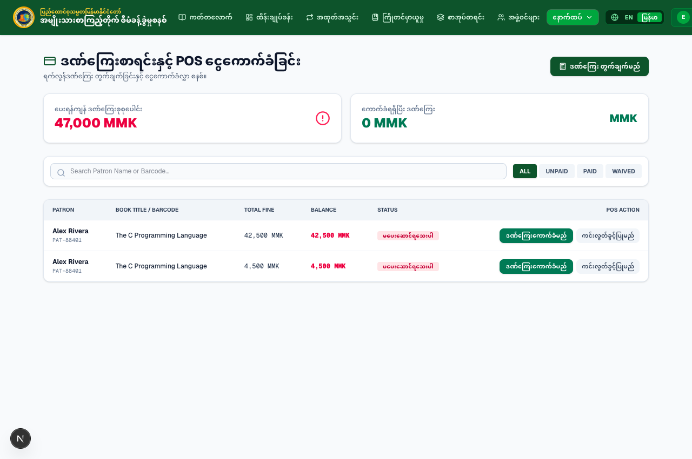
အပိုင်း (၃) - အဆင့်မြင့် အစီရင်ခံစာနှင့် စာရင်းဇယား စနစ် (Reporting & Analytics Suite)
လုပ်ဆောင်ချက် ၁၄ - စွမ်းဆောင်ရည် အနှစ်ချုပ်နှင့် Date Filter (Executive Summary & Date Filter)
ရည်ရွယ်ချက်: စာကြည့်တိုက်၏ လုပ်ငန်းစွမ်းဆောင်ရည် အခြေအနေများကို ရက်စွဲကာလအလိုက် စစ်ထုတ်ကြည့်ရှုနိုင်ပြီး အနှစ်ချုပ် စာရင်းဇယားများကို လေ့လာဆန်းစစ်နိုင်စေရန် ဖြစ်ပါသည်။
အဓိက အချက်များ-
- ရက်စွဲ စစ်ထုတ်သည့် ကိရိယာ (Date Filter Presets & Custom Range):
- အမြန်ရွေးချယ်မှုများ:
၁၄ ရက်၊၇ ရက်၊၃၀ ရက်၊ဒီလ၊၃ လ၊ယနေ့၊မှတ်တမ်းအားလုံး။ - စိတ်ကြိုက်ရက်စွဲ: "ရက်စွဲရွေးမည် (Custom)" တွင် စတင်မည့်ရက် (From) နှင့် ပြီးဆုံးမည့်ရက် (To) ကို Date Picker ဖြင့် ရွေးချယ်ပြီး Apply Range နှိပ်နိုင်ပါသည်။
- အမြန်ရွေးချယ်မှုများ:
- အဓိက KPI ကတ်ပြား ၆ ခု (Fixed KPIs): Total Titles, E-Resources, Active Members (VIP အပါအဝင်), Period Loans, Pending Holds, Outstanding Fines (NaN ပြဿနာ ကင်းစင်ပြီး တိကျသော MMK ဖော်ပြချက်)။
- ငှားရမ်းမှု ပြောင်းလဲချက်ဇယား (Dynamic Loan Trend Chart): ရွေးချယ်ထားသော ရက်စွဲကာလအတွင်း တစ်ရက်ချင်းစီအလိုက် စာအုပ်ငှားရမ်းမှု အရေအတွက်ကို Bar Chart ဖြင့် ပုံဖော်ပေးပါသည်။
- စွမ်းဆောင်ရည် နှုန်းထားများ (Performance Rings): စာအုပ်အသုံးချမှုနှုန်း (Utilization Rate)၊ ပြန်အပ်မှုနှုန်း (Return Rate)၊ ဒဏ်ကြေးကောက်ခံနှုန်း (Collection Rate) နှင့် ရက်ကျော်မှုနှုန်း (Overdue Rate)။
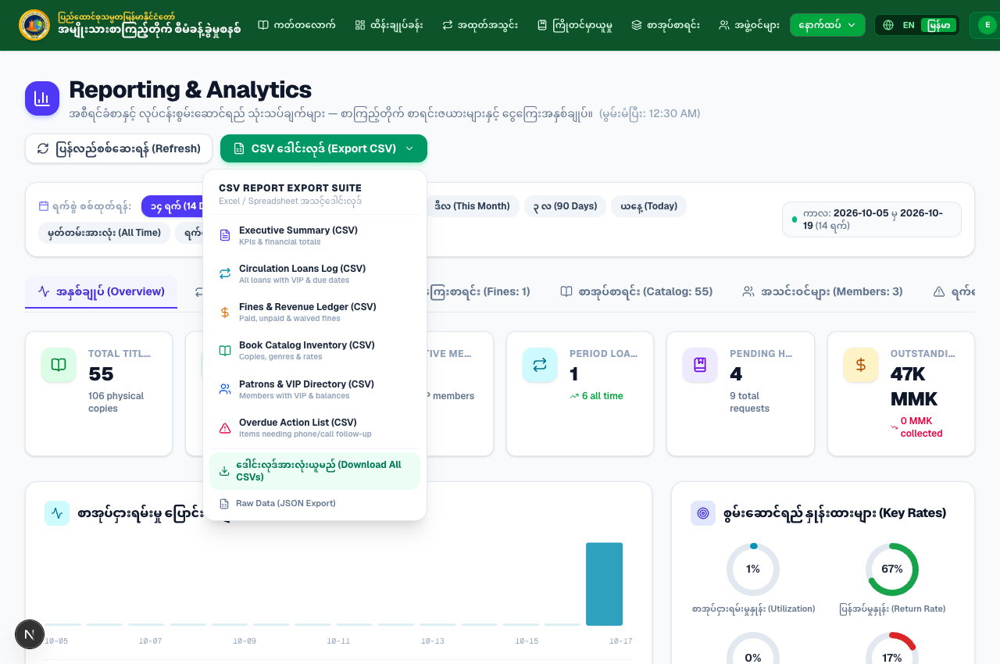
လုပ်ဆောင်ချက် ၁၅ - ငှားရမ်းမှုမှတ်တမ်းနှင့် CSV ဒေါင်းလုဒ် (Circulation Loans Ledger & CSV Export)
ရည်ရွယ်ချက်: ရွေးချယ်ထားသော ရက်စွဲကာလအတွင်း ငှားရမ်းခဲ့သော မှတ်တမ်းအသေးစိတ်များကို ဇယားဖြင့် ကြည့်ရှုစစ်ဆေးနိုင်ပြီး Excel စာရင်းဇယားအဖြစ် ဒေါင်းလုဒ်ဆွဲနိုင်စေရန် ဖြစ်ပါသည်။
အဓိက အချက်များ-
- အသေးစိတ် စာရင်းဇယား: အသင်းဝင်အမည်၊ VIP အဆင့်၊ ဘားကုဒ်၊ စာအုပ်ခေါင်းစဉ်၊ စာရေးဆရာ၊ မိတ္တူဘားကုဒ်၊ ငှားသည့်ရက်၊ ပြန်အပ်ရမည့်ရက်၊ အပ်နှံသည့်ရက်၊ အခြေအနေနှင့် သက်တမ်းတိုးကြိမ်ရေ။
- ရှာဖွေစစ်ထုတ်မှုစနစ်: စာအုပ်အမည်၊ အသင်းဝင်အမည်ဖြင့် ရှာဖွေနိုင်ပြီး အခြေအနေအလိုက် (ISSUED, OVERDUE, RETURNED) စစ်ထုတ်နိုင်ပါသည်။
- တိုက်ရိုက် CSV ဒေါင်းလုဒ်: ဇယားအပေါ်ရှိ "ငှားရမ်းမှုမှတ်တမ်း CSV ဒေါင်းလုဒ်" ခလုတ်ကို နှိပ်လိုက်သည်နှင့် UTF-8 BOM ပါဝင်သော CSV ဖိုင်အဖြစ် ချက်ချင်း ရရှိပါသည်။
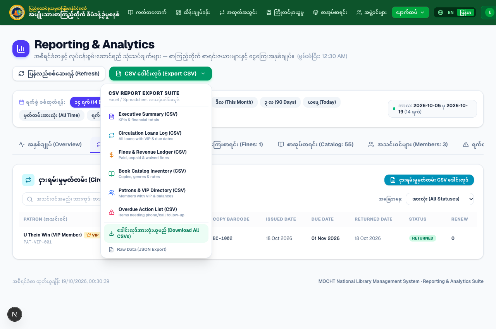
လုပ်ဆောင်ချက် ၁၆ - ဒဏ်ကြေးငွေစာရင်းနှင့် CSV ဒေါင်းလုဒ် (Fines & Financial Ledger & CSV Export)
ရည်ရွယ်ချက်: စာကြည့်တိုက်မှ ကောက်ခံရရှိသော ငွေကြေးများနှင့် ရရန်ကျန် ဒဏ်ကြေးစာရင်းများကို ဘဏ္ဍာရေး အစီရင်ခံစာအဖြစ် စိစစ်ထုတ်ယူနိုင်စေရန် ဖြစ်ပါသည်။
အဓိက အချက်များ-
- ဘဏ္ဍာရေး အနှစ်ချုပ် ကတ်ပြားများ: ကျသင့်ဒဏ်ကြေးစုစုပေါင်း (Total Incurred)၊ ကောက်ခံရရှိငွေ (Total Collected)၊ ရရန်ကျန်ဒဏ်ကြေး (Outstanding Balance)။
- ဒဏ်ကြေးစာရင်း အသေးစိတ်ဇယား: အသင်းဝင်အချက်အလက်၊ စာအုပ်အမည်၊ ဒဏ်ကြေးဖြစ်ရသည့် အကြောင်းရင်း (Overdue, Lost Book, Damage)၊ ကျသင့်ငွေ၊ ပေးပြီးငွေ၊ ကျန်ငွေနှင့် ရက်စွဲ။
- တိုက်ရိုက် CSV ဒေါင်းလုဒ်: "ဒဏ်ကြေးစာရင်း CSV ဒေါင်းလုဒ်" ခလုတ်ဖြင့် စာရင်းအင်းဌာနသို့ တင်ပြနိုင်သည့် Excel CSV ဖိုင်ကို ဒေါင်းလုဒ်ဆွဲနိုင်ပါသည်။
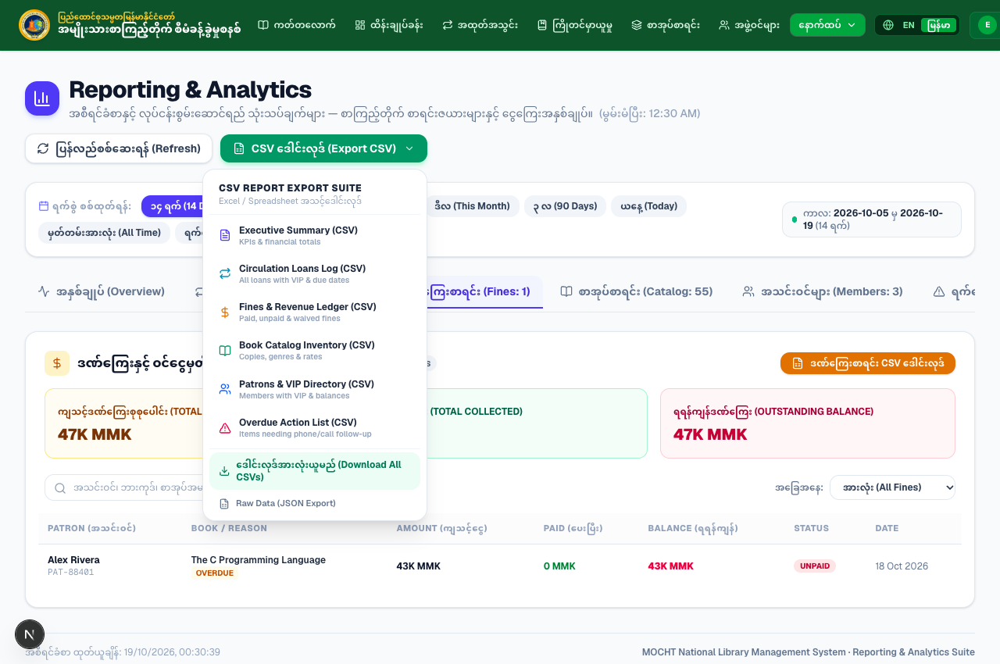
လုပ်ဆောင်ချက် ၁၇ - စာအုပ်လက်ကျန်စာရင်းနှင့် CSV ဒေါင်းလုဒ် (Catalog Inventory Status & CSV Export)
ရည်ရွယ်ချက်: စာကြည့်တိုက်ရှိ စာအုပ်ခေါင်းစဉ်များ၊ ရုပ်ပိုင်းဆိုင်ရာ မိတ္တူများ၊ စင်ပေါ်ရှိ/ငှားထားဆဲ အခြေအနေများကို စာရင်းစစ်ဆေးနိုင်ရန် ဖြစ်ပါသည်။
အဓိက အချက်များ-
- စာအုပ်လက်ကျန် အချက်အလက်များ: စာအုပ်ခေါင်းစဉ်၊ စာရေးဆရာ၊ ISBN၊ အမျိုးအစား၊ စုစုပေါင်းမိတ္တူ (Total Copies)၊ စင်ပေါ်ရှိမိတ္တူ (Available)၊ ငှားထားဆဲမိတ္တူ (On Loan)၊ ငှားရမ်းခွင့်ရက်နှင့် တစ်ရက်ဒဏ်ကြေးနှုန်း။
- တိုက်ရိုက် CSV ဒေါင်းလုဒ်: "စာအုပ်စာရင်း CSV ဒေါင်းလုဒ်" ခလုတ်ဖြင့် စာကြည့်တိုက် စာရင်းစစ် (Audit) အတွက် အသင့်သုံးနိုင်ပါသည်။
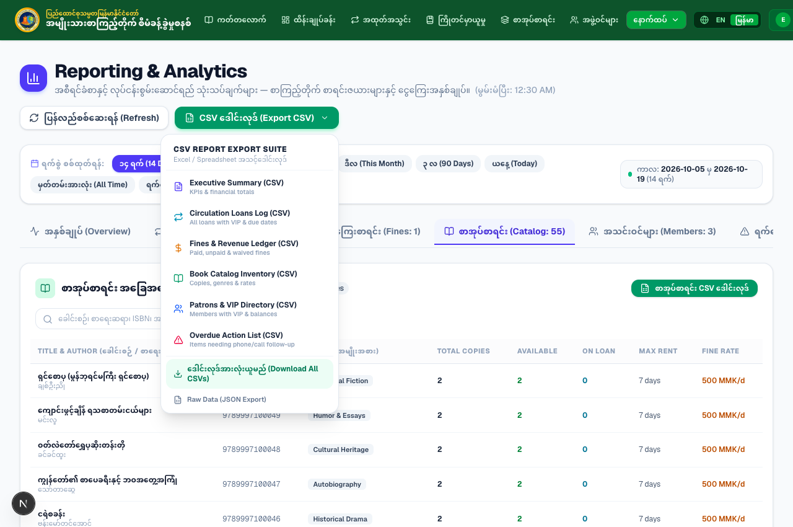
လုပ်ဆောင်ချက် ၁၈ - အသင်းဝင်များနှင့် VIP စာရင်း CSV ဒေါင်းလုဒ် (Patron & VIP Directory & CSV Export)
ရည်ရွယ်ချက်: စာကြည့်တိုက်တွင် မှတ်ပုံတင်ထားသော အသင်းဝင်အားလုံး၏ စာရင်း၊ VIP အဆင့်အတန်း၊ ဆက်သွယ်ရန်ဖုန်း၊ လက်ရှိငှားထားသော စာအုပ်များနှင့် ဒဏ်ကြေးကျန်ငွေများကို တစ်စုတစ်စည်းတည်း စစ်ဆေးနိုင်စေရန် ဖြစ်ပါသည်။
အဓိက အချက်များ-
- အသင်းဝင် အချက်အလက်ဇယား: အသင်းဝင်အမည်၊ ဘားကုဒ်၊ အဆင့် (Standard သို့မဟုတ် VIP +7d)၊ အီးမေးလ်/ဖုန်း၊ စုစုပေါင်းငှားဖူးသည့် အကြိမ်ရေ၊ လက်ရှိငှားထားသော စာအုပ်အရေအတွက်၊ ရက်ကျော်စာအုပ်အရေအတွက်နှင့် အကောင့်အခြေအနေ (Active / Suspended)။
- တိုက်ရိုက် CSV ဒေါင်းလုဒ်: "အသင်းဝင်များ CSV ဒေါင်းလုဒ်" ခလုတ်ဖြင့် အသင်းဝင်မှတ်ပုံတင် စာရင်းဇယားကို Excel သို့ ထုတ်ယူနိုင်ပါသည်။
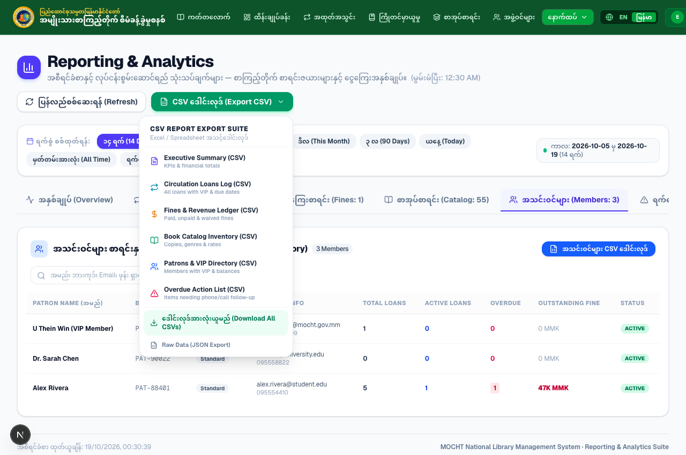
လုပ်ဆောင်ချက် ၁၉ - ရက်ကျော်လွန်စာအုပ်များ စာရင်းနှင့် CSV ဒေါင်းလုဒ် (Overdue Action List & CSV Export)
ရည်ရွယ်ချက်: သတ်မှတ်ရက် ကျော်လွန်နေသော စာအုပ်များကို ချက်ချင်းဖော်ထုတ်ပြီး စာဖတ်သူထံ ဖုန်းဆက်၍ အမြန်ဆုံး ပြန်လည်အပ်နှံစေရန် ဆက်သွယ်ဆောင်ရွက်နိုင်စေရန် ဖြစ်ပါသည်။
အဓိက အချက်များ-
- လုပ်ဆောင်ရန် လိုအပ်သော ရက်လွန်စာရင်း (Action List): အသင်းဝင်အမည်၊ ဘားကုဒ်၊ စာအုပ်ခေါင်းစဉ်၊ မိတ္တူဘားကုဒ်၊ ပြန်အပ်ရမည့်ရက်၊ ရက်လွန်နေသော ရက်အရေအတွက် (
7d,14d+ အရောင်ကုဒ်များ)၊ ကျသင့်ဒဏ်ကြေးငွေနှင့် ဆက်သွယ်ရန် ဖုန်းနံပါတ်။ - တိုက်ရိုက် CSV ဒေါင်းလုဒ်: "ရက်ကျော်စာရင်း CSV ဒေါင်းလုဒ်" ခလုတ်ဖြင့် စာအုပ်ပြန်လည်တောင်းခံရေး အဖွဲ့သားများ အသုံးပြုရန် Print ထုတ်ယူနိုင်ပါသည်။
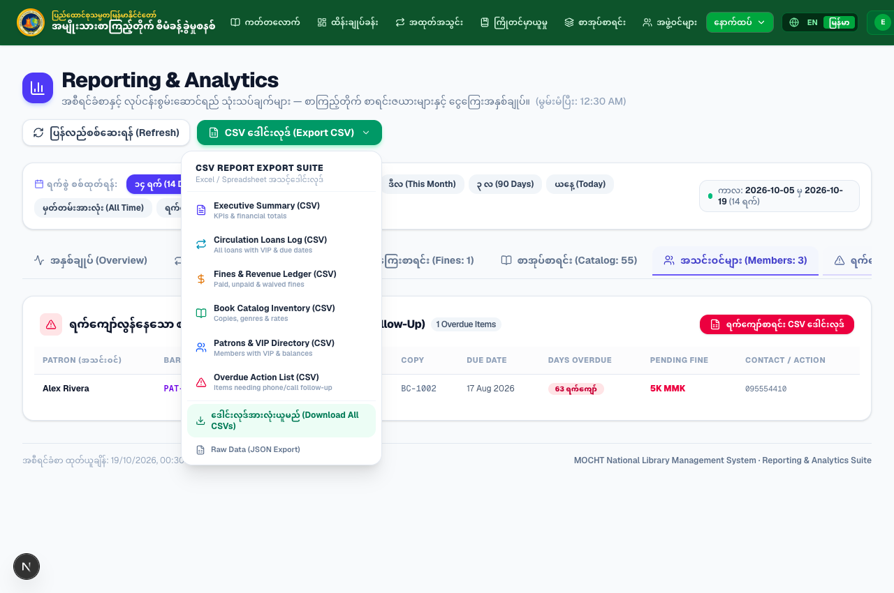
အပိုင်း (၄) - အဆင့်မြင့် စာကြည့်တိုက် လုပ်ငန်းဆောင်ရွက်ချက်များ (Enterprise Library Services)
လုပ်ဆောင်ချက် ၂၀ - စာအုပ်ဝယ်ယူမှု စီမံခန့်ခွဲခြင်း (Acquisitions & Purchase Orders)
ရည်ရွယ်ချက်: စာကြည့်တိုက်အတွက် စာအုပ်အသစ်များ ဝယ်ယူရန် ဘတ်ဂျက်လျာထားခြင်း၊ ကုန်သည်များထံ အမှာစာ (Purchase Orders) တင်သွင်းခြင်းနှင့် စာအုပ်လက်ခံရရှိမှုများကို စနစ်တကျ မှတ်တမ်းတင်ရန် ဖြစ်ပါသည်။
အဓိက အချက်များ-
- ဘတ်ဂျက်ခြေရာခံမှု (Budget Tracking): စုစုပေါင်းခွင့်ပြုဘတ်ဂျက်၊ သုံးစွဲပြီးငွေနှင့် လက်ကျန်ငွေများကို တိကျစွာ ပြသပေးပါသည်။
- အမှာစာ စီမံခန့်ခွဲမှု (PO Management): အမှာစာတင်ခြင်း (Order Placed)၊ စာအုပ်လက်ခံရရှိခြင်း (Received) နှင့် ငွေပေးချေပြီးစီးခြင်း (Invoiced) အခြေအနေများကို အဆင့်လိုက် ထိန်းချုပ်နိုင်ပါသည်။
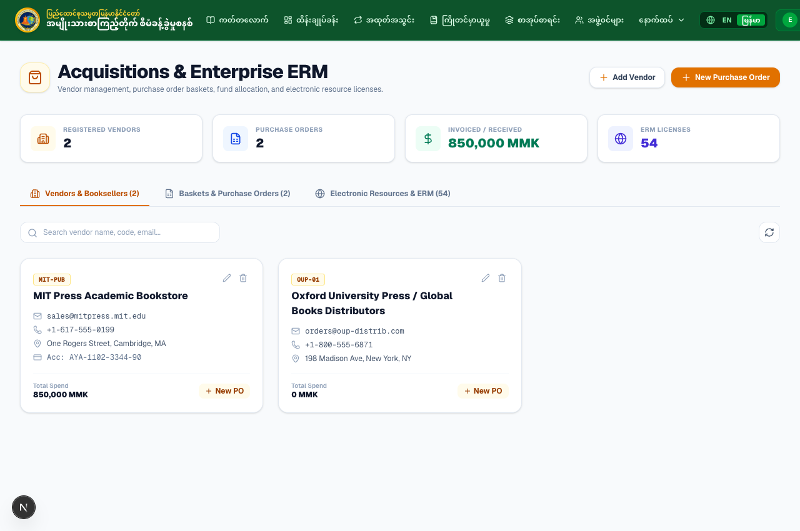
လုပ်ဆောင်ချက် ၂၁ - ဂျာနယ်နှင့် မဂ္ဂဇင်း စာရင်းသွင်းမှု (Serials & Periodicals)
ရည်ရွယ်ချက်: နေ့စဉ်ထုတ် သတင်းစာများ၊ အပတ်စဉ်ဂျာနယ်များနှင့် လစဉ်ထုတ် မဂ္ဂဇင်းများကို စာရင်းသွင်း စီမံခန့်ခွဲနိုင်စေရန် ဖြစ်ပါသည်။
အဓိက အချက်များ-
- ထုတ်ဝေမှု အကြိမ်ရေ သတ်မှတ်ခြင်း (Frequency): နေ့စဉ် (Daily)၊ အပတ်စဉ် (Weekly)၊ လစဉ် (Monthly)၊ နှစ်စဉ် (Annually) စသဖြင့် သတ်မှတ်နိုင်ပါသည်။
- ISSN နံပါတ် မှတ်တမ်းတင်ခြင်း: အပြည်ပြည်ဆိုင်ရာ ဂျာနယ်စံသတ်မှတ်ကုဒ် (ISSN) ဖြင့် တိကျစွာ ရှာဖွေနိုင်ပါသည်။
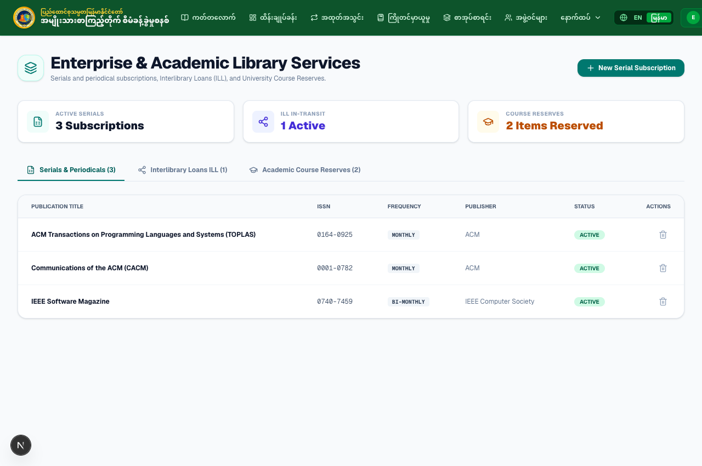
လုပ်ဆောင်ချက် ၂၂ - စာကြည့်တိုက်အချင်းချင်း ချိတ်ဆက်ငှားရမ်းခြင်း (Interlibrary Loan - ILL)
ရည်ရွယ်ချက်: မိမိစာကြည့်တိုက်တွင် မရှိသော ရှားပါးစာအုပ်များကို အခြားမိတ်ဖက် တက္ကသိုလ်များနှင့် နိုင်ငံတော်စာကြည့်တိုက်များထံမှ တောင်းခံငှားရမ်းနိုင်စေရန် ဖြစ်ပါသည်။
အဓိက အချက်များ-
- မိတ်ဖက်စာကြည့်တိုက် ကွန်ရက် (Partner Libraries): ရန်ကုန်တက္ကသိုလ်၊ မန္တလေးတက္ကသိုလ်၊ အမျိုးသားစာကြည့်တိုက် စသည့် မိတ်ဖက်အဖွဲ့အစည်းများနှင့် ချိတ်ဆက်တောင်းခံနိုင်ပါသည်။
- တောင်းခံမှု အခြေအနေ (Request Lifecycle): တောင်းခံထားဆဲ (PENDING)၊ ပို့ဆောင်ဆဲ (IN_TRANSIT)၊ ရောက်ရှိလက်ခံရရှိ (RECEIVED) စသည့် အဆင့်များဖြင့် စောင့်ကြည့်နိုင်ပါသည်။
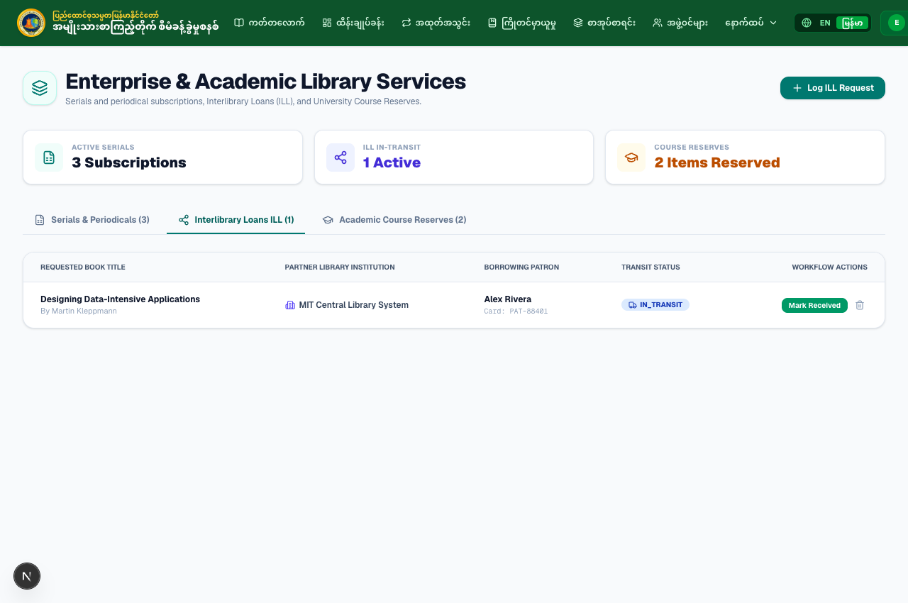
လုပ်ဆောင်ချက် ၂၃ - တက္ကသိုလ် သင်ရိုးညွှန်းတမ်း စာအုပ်များ (Course Reserves)
ရည်ရွယ်ချက်: တက္ကသိုလ်နှင့် ကောလိပ် သင်တန်းများအတွက် သက်ဆိုင်ရာ ကထိက/ပါမောက္ခများ ညွှန်းဆိုထားသော မဖြစ်မနေဖတ်ရှုရမည့် စာအုပ်များကို သီးသန့်ဖယ်ထားပေးနိုင်စေရန် ဖြစ်ပါသည်။
အဓိက အချက်များ-
- ဘာသာရပ်ကုဒ်နှင့် ဆရာအမည် (Course Code & Instructor): ဥပမာ-
CS-301: Advanced Algorithms (Dr. Win Maw)စသဖြင့် ဘာသာရပ်အလိုက် စာရင်းသွင်းနိုင်ပါသည်။ - ကျောင်းသားများ ဦးစားပေး ဖတ်ရှုခွင့်: သာမန်စာဖတ်သူများ ငှားရမ်းခွင့်ကို ကန့်သတ်ထားပြီး သက်ဆိုင်ရာ ဘာသာရပ်သင် ကျောင်းသားများသာ အဓိက ဖတ်ရှုနိုင်စေရန် ထိန်းချုပ်ထားနိုင်ပါသည်။
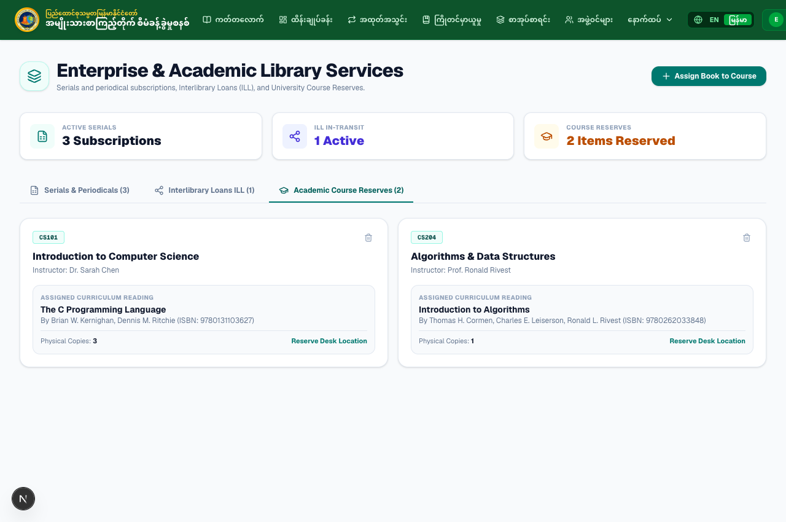
အပိုင်း (၅) - စံသတ်မှတ် လုပ်ငန်းလမ်းညွှန် (SOP) နှင့် အမေးများသော မေးခွန်းများ (FAQ)
စာကြည့်တိုက်မှူးများအတွက် နေ့စဉ် လုပ်ငန်းလမ်းညွှန် (Daily SOP)
- နံနက်ခင်း လုပ်ငန်းစတင်ချိန် (Morning Opening Routine):
- စနစ်သို့ Staff အကောင့်ဖြင့် Login ဝင်ပါ။
- Dashboard ပေါ်ရှိ Pending Holds (စောင့်ဆိုင်းစာရင်း) ကို စစ်ဆေးပြီး စင်ပေါ်မှ စာအုပ်များကို ထုတ်ယူကာ Reserved Shelf တွင် ထားရှိပါ။
- Reports ➔ ရက်ကျော်စာရင်း (Overdue Tab) သို့ သွားရောက်၍ ၁၄ ရက်ထက်ကျော်လွန်နေသော အသင်းဝင်များထံ ဖုန်းဖြင့် ဆက်သွယ်အသိပေးပါ။
- နေ့လယ်ပိုင်း ကောင်တာလုပ်ငန်းများ (Circulation Desk Operations):
- စာအုပ်လာငှားသူတိုင်း၏ အသင်းဝင်ကတ် ဘားကုဒ်ကို အရင်စကင်ဖတ်ပါ။
- VIP အသင်းဝင်ဖြစ်ပါက +7 ရက် ပိုမိုရရှိမည့် ရက်စွဲကို အသင်းဝင်အား ပြောကြားပေးပါ။
- စာအုပ်ပြန်အပ်သူများထံမှ ရက်လွန်ဒဏ်ကြေးငွေ (ရှိပါက) ကောက်ခံပြီး ပြေစာမှတ်တမ်း ရယူပါ။
- ညနေခင်း လုပ်ငန်းသိမ်းချိန် (Evening Closing Routine):
- Reports & Analytics သို့ သွားပါ။
- ရက်စွဲတွင် "ယနေ့ (Today)" ကို ရွေးချယ်ပါ။
- "Executive Summary (CSV)" နှင့် "Fines & Revenue Ledger (CSV)" ကို ဒေါင်းလုဒ်ရယူ၍ နေ့စဉ်ငွေစာရင်းနှင့် ငှားရမ်းမှုစာရင်းကို စာရင်းကိုင်ဌာနသို့ တင်ပြပါ။
အမေးများသော မေးခွန်းများ (Frequently Asked Questions - FAQ)
မေး။ VIP အသင်းဝင်တစ်ဦးသည် စာအုပ်ငှားရမ်းပါက မည်မျှ ရက်ပိုရရှိပါသနည်း။
ဖြေ။ သာမန်အသင်းဝင်များထက် +7 ရက် ပိုမိုရရှိပါသည်။ ဥပမာ သာမန်စာအုပ်တစ်အုပ်၏ စံငှားရမ်းခွင့်သည် ၇ ရက်ဖြစ်ပါက VIP အသင်းဝင်အတွက် စနစ်မှ အလိုအလျောက် ၁၄ ရက် ဟု သတ်မှတ်ပေးပါသည်။
မေး။ ရက်လွန်ဒဏ်ကြေးငွေကို မည်သို့ တွက်ချက်ပါသနည်း။
ဖြေ။ စာအုပ်ပြန်အပ်ရမည့်ရက် (Due Date) ကျော်လွန်သွားသော ရက်အရေအတွက်နှင့် စာအုပ်ထည့်သွင်းစဉ်က သတ်မှတ်ထားသော တစ်ရက်ဒဏ်ကြေးနှုန်း (ဥပမာ- ၅၀၀ ကျပ်) ကို မြှောက်၍ အလိုအလျောက် တိကျစွာ တွက်ချက်ပေးပါသည်။ (စုစုပေါင်းဒဏ်ကြေး = ရက်လွန်ရက် × တစ်ရက်ဒဏ်ကြေးနှုန်း)။
မေး။ CSV ဒေါင်းလုဒ်ဆွဲရာတွင် မြန်မာစာများ မှန်ကန်စွာ ပေါ်ပါသလား။
ဖြေ။ မှန်ကန်စွာ ပေါ်ပါသည်။ CSV ထုတ်ယူသည့် စနစ်တွင် UTF-8 BOM (Byte Order Mark) ပါဝင်အောင် တည်ဆောက်ထားသောကြောင့် Microsoft Excel, Google Sheets နှင့် LibreOffice တို့တွင် မြန်မာစာများ မပျက်မစီးဘဲ ရှင်းလင်းစွာ မြင်တွေ့နိုင်ပါသည်။
မေး။ အသင်းဝင်ကတ်ပြားကို ပလတ်စတစ်ကတ် (PVC Card) ဖြင့် ပုံနှိပ်လိုပါက မည်သို့လုပ်ဆောင်ရမည်နည်း။
ဖြေ။ အသင်းဝင်စာရင်း (/admin/patrons) တွင် သက်ဆိုင်ရာ အသင်းဝင်၏ "ကတ်ကြည့်ရန် (View Card)" ကို နှိပ်ပြီး "PNG ပုံထုတ်ယူရန် (Export as Image)" ခလုတ်ကို နှိပ်ပါ။ စနစ်မှ $1050 \times 660$ pixel ရှိသော ကြည်လင်ပြတ်သားသည့် ဓာတ်ပုံဖိုင်ကို ထုတ်ပေးမည်ဖြစ်ပြီး မည်သည့် PVC Card Printer ဖြင့်မဆို တိုက်ရိုက် ပုံနှိပ်အသုံးပြုနိုင်ပါသည်။
ဤလမ်းညွှန်စာအုပ်ကို ဟိုတယ်နှင့်ခရီးသွားလာရေးဝန်ကြီးဌာန၊ အမျိုးသား ဒစ်ဂျစ်တယ် စာကြည့်တိုက် စီမံခန့်ခွဲမှုစနစ်အတွက် အပြည့်အစုံ ရေးသားပြုစုထားပါသည်။